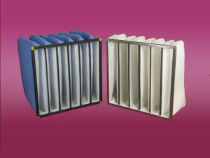

Карманные фильтры класса G3-G4 предназначены для очистки воздуха в разнообразных системах вентиляции, объём фильтрующегося воздуха в которых, больше чем номинальный. Этот фильтр подойдёт для помещений, где установлена вытяжная и циркулярная фильтрация. К ним относятся покрасочные цехи и производственные помещения с такими технологическими процессами как, металлообработка, изготовление лекарственных препаратов, производство химической продукции и т.д.